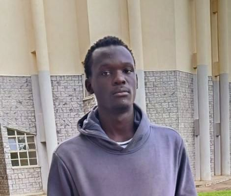

Hello, I'm
Edmond Otieno
Information Technology Student & Web Developer
I am passionate about software development, artificial intelligence, and building practical, technology-driven solutions that solve real-world problems.

About Me
I am an Information Technology student based in Kenya with a strong interest in software development, web development, and artificial intelligence. My technical journey is driven by a curiosity to understand how things work and a desire to build applications that address practical challenges.
I continuously strive to improve my technical skills and learn emerging technologies. My goal is to leverage my academic background and hands-on experience to contribute to meaningful technology projects and innovative digital solutions.
Education
Bachelor of Science in Information Technology
2025 – 2028Kisii University, Kenya
Relevant Coursework: Programming, Web Development, Information Systems.